オーストラリア¶
重要
Odoo is currently in the process of becoming compliant with STP Phase 2 and SuperStream. An announcement will be made as soon as companies can use Odoo for payroll as a one-stop platform.
Setting up employees¶
Employee settings¶
Create an employee by going to . Go to the Settings tab, and configure the Australian Payroll section, for example checking if they are Non-resident, if they benefit from the Tax-free Threshold, their TFN Status, Employee Type, etc.

Employee private information¶
In addition, some personal employee information is required for payroll compliance with Single Touch Payroll, and to process superannuation payments. Open the employee's Private Information tab and fill in the following fields:
Private Address
Private Email
Private Phone
Date of Birth
注釈
Odoo will remind you to complete the required data at different stages of the process.
Super accounts and funds¶
You can add the superannuation details of new employees under the employee's Super Accounts tab. Click Add a line and make sure to include the Member Since date, Member Number, and Super Fund.
ちなみに
Use the Proportion field if an employee's contributions should sent to multiple funds at a time.
To create a new Super Fund, start typing its name and click Create and edit.... Fill in its:
住所
ABN
Type (APRA / SMSF)
unique identifier (USI for APRA, ESA for SMSF)
(for SMFS only) Bank Account
ちなみに
Manage all super accounts and funds by going to or .
重要
Odoo is currently in the process of becoming SuperStream-compliant.
契約¶
Once the employee has been created, create their employment contract by clicking the Contracts smart button, or by going to .
注釈
Only one contract can be active per employee at a time. However, an employee can be assigned consecutive contracts during their employment.
Employment contract creation: recommended steps¶
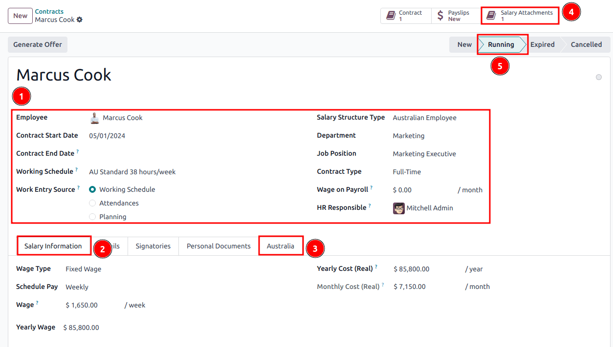1. Basic contractual information¶
Select the Contract Start Date and Working Schedule (set, or flexible for casual workers).
Keep the Salary Structure Type set to Australian Employee. This structure covers all of the ATO's tax schedules.
(if using the Attendances or Planning app) Select the Work Entry Source to define how working hours and days are accounted for on the employee's payslip.
Working Schedule: work entries are automatically generated based on the employee's working schedule, starting from the contract's start date.
Example
An employee works 38 hours a week, their contract begins on 01/01, today's date is 16/01, and the user generates a pay run from 14/01 to 20/01. The working hours on the payslip will be automatically calculated to be 38 hours (5 * 7.36 hours) if no unpaid leave is taken.
Attendances: the working schedule is ignored, and work entries are only generated after clocking in and out of the Attendances app. Note that attendances can be imported.
Planning: the working schedule is ignored, and work entries are generated from planning shifts in the Planning app.
重要
Timesheets do not impact work entries in Odoo. If you need to import your timesheets in Odoo, import them by going to instead.
2. Salary Information tab¶
Wage Type: select Fixed Wage for full-time and part-time employees, and Hourly Wage for casual workers. The latter allows you to add a Casual Loading percentage.
注釈
For hourly workers, the Hourly Wage field should exclude casual loading.
Schedule Pay: in Australia, only the following pay run frequencies are accepted: Daily, Weekly, Bi-weekly (or fortnightly), Monthly, and Quarterly.
Wage /period: assign a wage to the contract according to their pay frequency. On payslips, the corresponding annual and hourly rates will be computed automatically.
3. Australia tab¶

一般
Add the Regular Pay Day if relevant.
Enable Report in BAS - W3 if you choose to add PAYG withholding amounts in BAS section W3 instead of W2 (refer to the ATO's web page on PAYG withholding for more information).
Leave loading / workplace giving
Define whether your employees are Eligible for Leave Loading.
Set the Workplace Giving Employee amount in exchange for deductions.
Set the Salary Sacrificed Workplace Giving amount (e.g., receiving a benefit instead of a deduction).
Super contributions
Add the Extra Negotiated Super % on top of the super guarantee.
Add the Extra Compulsory Super % as per industrial agreements or awards obligations.
Salary sacrifice
Salary Sacrifice Superannuation allows employees to sacrifice part of their salary in favor of reportable employer superannuation contributions (RESC).
Salary Sacrifice Other Benefits allows them to sacrifice part of their salary towards some other form of benefit (refer to the ATO's web page on Salary sacrificing for employees for more information).
注釈
As of Odoo 18, salary sacrificing for other benefits currently does not impact fringe benefits tax (FBT) reporting.
4. Salary attachments¶
If the employee is to receive additional recurring payments every pay run, whether indefinitely or for a set number of periods, click the Salary Attachments smart button on the contract. Choose a Type and a Description.
注釈
Around 32 recurring salary attachment types exist for Australia. These are mostly related to allowances and child support. Contact us for more information as to whether allowances from your industry can be covered.
5. Run the contract¶
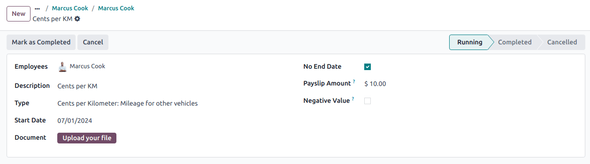Once all the information has been completed, change the contract stage from New to Running.
Prepare pay runs¶
標準¶
Pay runs are created by going to . After clicking New, enter a Batch Name, select a Period, and click Generate Payslips.
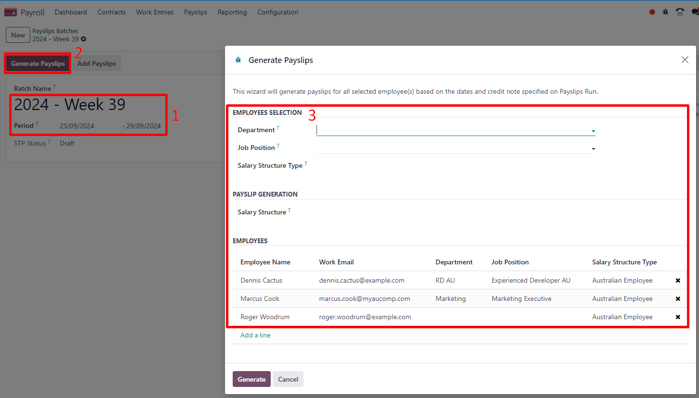Employees on a pay run can be filtered down by Department and Job Position. There is no limit to the amount of payslips that can be created in one batch. After clicking Generate, one payslip is created per employee in the Waiting stage, in which they can be reviewed and amended before validation.
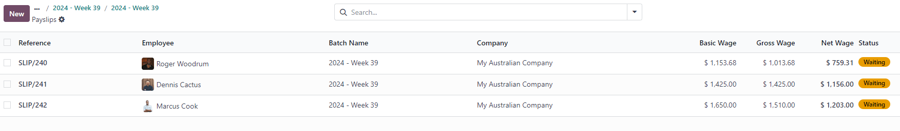On the payslip form view, there are two types of inputs:
Worked days are computed based on the work entry source set on the employee's contract. Work entries can be configured according to different types: attendance, overtime, Saturday rate, Sunday rate, public holiday rate, etc.
Other inputs are individual payments or amounts of different types (allowances, lump sums, deductions, termination payments, leaves, etc.) that have little to do with the hours worked during the current pay period. The previously configured salary attachments are simply recurring other inputs attached to a contract.
Under the Salary Computation tab, Odoo automatically computes payslip rules based on employees, contracts, worked hours, other input types, and salary attachments.
The salary structure Australian Employee has 35 payslip rules that automatically compute and dynamically display according to the payslip inputs.
Example
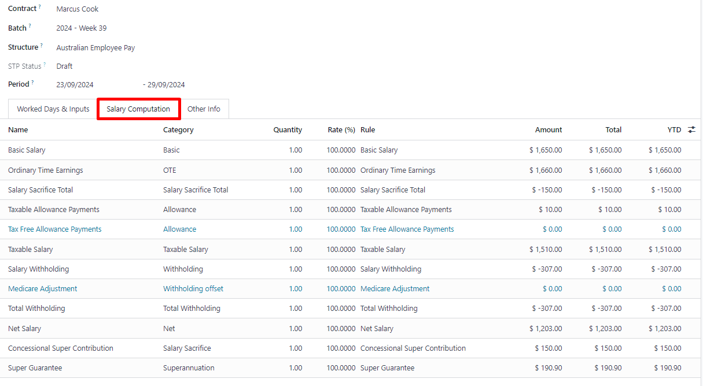The following rules apply for that pay period in the above example:
Basic Salary: pre-sacrifice gross salary
Ordinary Time Earnings: amount to which the super guarantee percentage needs to be applied
Salary Sacrifice Total: includes the $150 sacrificed to superannuation
Taxable Allowance Payments: includes the $10 allowance (cents per KM in this case)
Taxable Salary: gross salary amount minus non-taxable amounts
Salary Withholding and Total Withholding: amounts to be withheld from the taxable salary
Net Salary: the employee's net wage
Concessional Super Contribution: in this scenario, the amount sacrificed to superannuation, payable to the employee's super fund in addition to the super guarantee
Super Guarantee: as of 01 July 2024, it is computed as 11.5% of the ordinary time earnings amount
注釈
As of Odoo 18, the most recent tax schedule rates (2024-2025) have been updated for all salary rules and computations.
Out-of-cycle¶
In Australia, payslips created without a batch are considered to be out-of-cycle runs. Create them by going to . The same payslip rules apply, but the way these payslips are submitted to the ATO in the frame of Single Touch Payroll (STP) is slightly different.
重要
As of Odoo 18, adding an out-of-cycle payslip to an existing batch is not recommended.
Finalise pay runs¶
Validate payslips¶
Once all payslip data is deemed correct, click Create Draft Entry on the payslip batch. This can also be done payslip by payslip for control reasons.
This has several impacts:
Marking the batch and its payslips as Done.
Creating a draft accounting entry per payslip or one entry for the whole batch, depending on your payroll settings. At this stage, accountants can post entries to affect the balance sheet, P&L report, and BAS report.
Preparing the STP submission (or payroll data to be filed to the ATO as part of STP compliance). This needs to be performed by the STP Responsible user, defined under .
Preparing super contribution lines as part of SuperStream compliance. This needs to be done by the HR Super Send user selected under .
Submit payroll data to the ATO¶
重要
Odoo is currently in the process of becoming compliant with STP Phase 2, and this step described above does not submit data yet to the ATO.
As per ATO requirements, STP submission for a pay run needs to be done on or before the payday. For this reason, submit your STP data to the ATO first before proceeding with payment. To do so, click Submit to ATO on the payslip batch.
On the STP record for this pay run, a few useful information is displayed:
a warning message if important information is missing,
an automatically generated activity for the STP responsible user, and
a summary of payslips contained in this pay run, auditable from this view.
Once the STP record is ready to go, click Submit to ATO, then read and accept the related terms and conditions.
従業員に支払う¶
Once the ATO submission is complete, you can proceed to pay your employees. To facilitate the payment matching process, remember to post the payslip-related journal entries prior to validating a payment.
Although you may decide to pay your employees individually, we recommend creating a batch payment from your payslip batch. To do so, click Pay on the payslip batch, and select ABA Credit Transfer as the Payment Method.
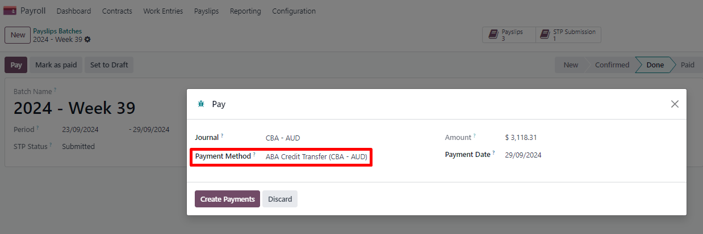This has two impacts:
Marking the batch and its payslips as Paid.
Creating a Payment Batch linked to the payslip batch.
When receiving the bank statement in Odoo, you can now match the statement line with the batch payment in one click. The payment is not reconciled against the payslip batch, and all individual payslips.
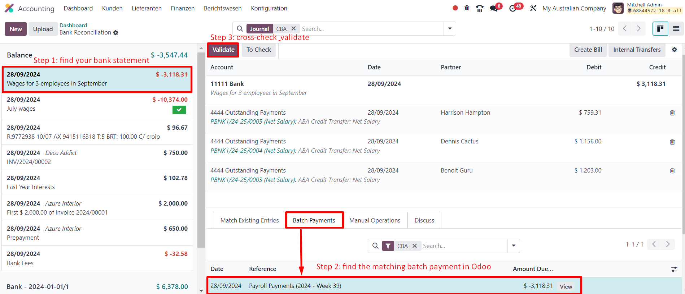Impact on accounting¶
Depending on the employee and contract configuration, the journal entry linked to a payslip will be more or less exhaustive.
Example
For instance, here is the journal entry generated by the employee Marcus Cook configured above.
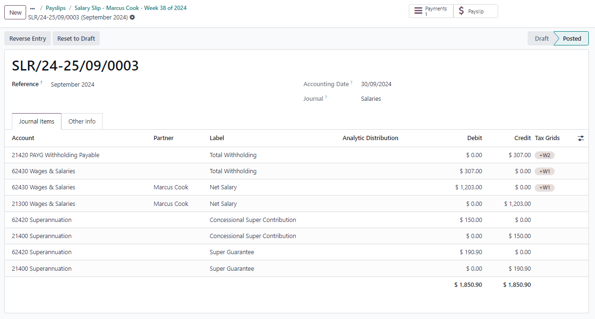Once posted, predefined accounts will impact the company's balance sheet (PAYGW, wages, and superannuation liabilities) and profit & loss report (wages and superannuation expenses). In addition, the employee's gross wage and PAYG withholding will update the BAS report for the relevant period (see Tax Grid: W1 and W2). Accounts can be adjusted to the company's chart of accounts.
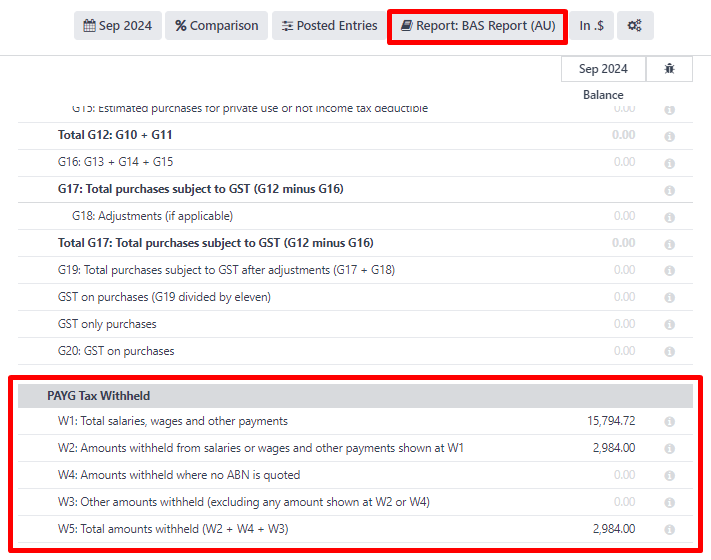Other payroll flows¶
Paying super contributions¶
重要
Odoo has a partnership with a clearing house to process both superannuation payments and data to the right funds in one click, via direct debit. Odoo is currently in the process of becoming compliant with SuperStream, and an announcement will be made as soon as superannuation contributions can be processed via Odoo's payroll solution.
Once a quarter (or more frequently, in preparation for Payday Super), you have to process superannuation payments to your employees' super funds. To do so, go to .
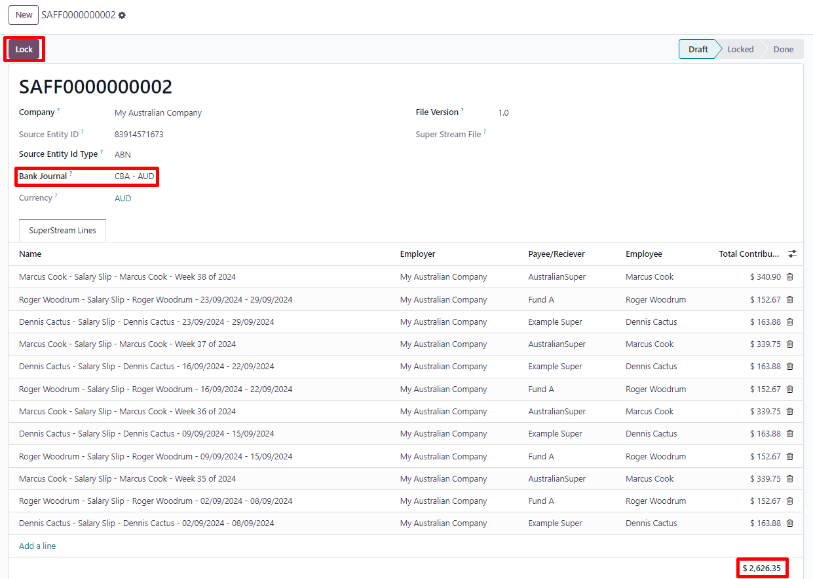When ready to pay, add the Bank Journal that will be used to pay the super from, then click Lock to prevent the contributions from subsequent payslips from being added to that file. Instead, a new Super file will be created.
Once the payment has been processed, it can be traced back to the Super file and matched with a bank statement.

Terminating employees¶
Employees can be terminated by going to .
The following fields must be completed:
Contract End Date: once the termination is validated, this date will be added to the contract automatically, and mark the contract as Expired when the date has been reached.
Cessation Type Code: a mandatory field for the ATO's STP reporting.
Termination Type: the type of redundancy (genuine or non-genuine) affects the computation of unused annual and long service leave withholding.

The balance of unused annual leaves and long service leaves is displayed for reference.
Confirming the termination creates an out-of-cycle payslip with the tag final pay. It computes the worked days until the contract end date, in addition to the employee's unused annual and long service leave entitlements.

Odoo automatically computes unused leave entitlements based on the employee's current hourly rate leave loading (for annual leaves only), and the remaining leave balance. However, these amounts can be manually edited in the Other Inputs table if necessary.
Employment Termination Payments (ETP) can also be added to the Other Inputs table. Odoo has a comprehensive list of excluded and non-excluded ETPs for companies to select from.
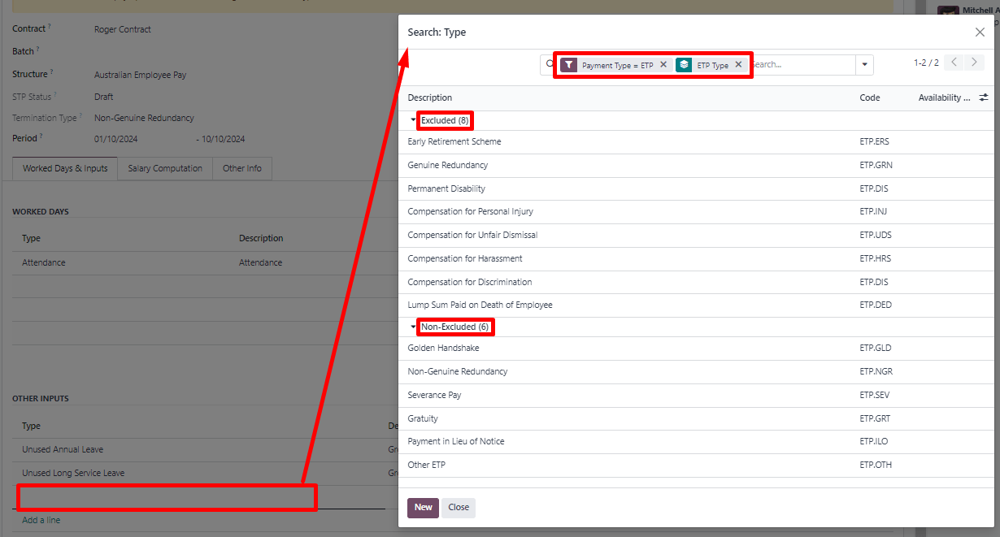注釈
Withholding for unused leaves and ETPs is computed according to the ATO's Schedule 7 and Schedule 11 and updated as of 01 July 2024.
ちなみに
Once an employee has been terminated and the last detailed of their employment resolved, you can archive the employee by clicking the (Actions) icon, then Archive on the employee's form view.
Switching from another STP software to Odoo¶
When switching from another STP-enabled software to Odoo, you might need to maintain the continuity in the YTD values of your employees. Odoo allows importing employees' YTD values by going to and clicking Import YTD Balances.
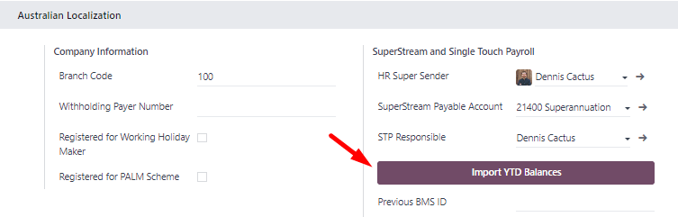For the ATO to recognize the employee records of your previous software and keep a continuity in Odoo, you must enter the:
Previous BMS ID (one per database)
Previous Payroll ID (one per employee)
Ask your previous software provider if you cannot find its BMS ID or your employees' payroll IDs.
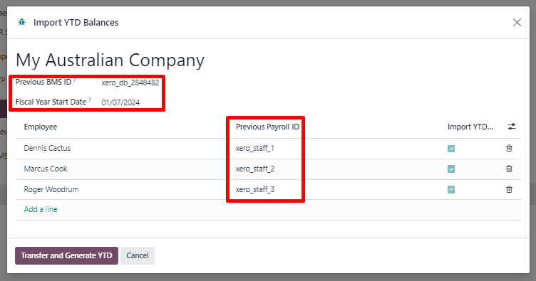This will give you the opportunity to add your employees' YTD opening balances in the current fiscal year. The ATO reports on a lot of different types of YTD. These are represented by the 13 following Salary Rules in Odoo.
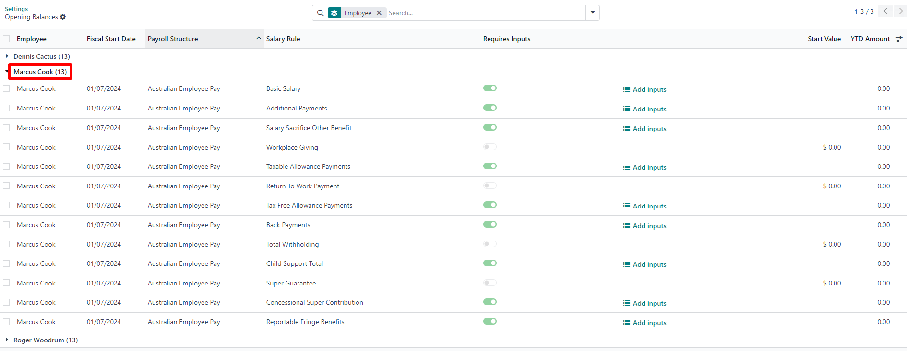Example
Let us say that the employee Marcus Cook has been transitioned from another STP-enabled software on September 1. Marcus has received two monthly payslips in his previous software (for July and August). Here are the YTD balances Marcus's company needs to transfer to Odoo:
YTD category |
YTD balance to transfer |
|---|---|
Gross (normal attendance) |
$13,045.45 |
Gross (overtime) |
$1,000 |
Paid leave |
$954.55 |
Laundry allowance |
$200 |
Total withholding |
$2,956 |
Super Guarantee |
$1,610 |
If some YTD balances need to be reported with more granularity to the ATO, you can use the salary rule's inputs.
Example
For instance, the Basic Salary rule can contain six inputs, and three are necessary in our example: regular gross amounts, overtime, and paid leaves. These are all reported differently in terms of YTD amounts.
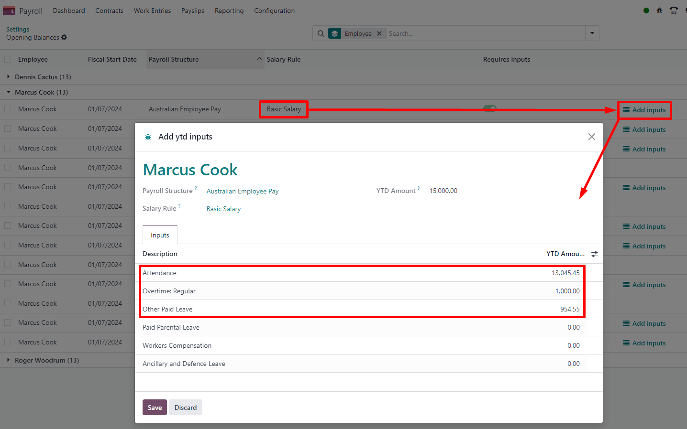The finalized YTD opening balances for Marcus Cook look like the following.
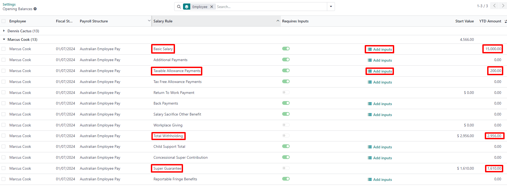As a result, YTD computations on payslips are based on the employee's opening balances instead of starting from zero.
STP finalisation¶
重要
Odoo is currently in the process of becoming compliant with STP Phase 2, and the finalisation flows described below do not yet submit data to the ATO.
EOFY finalisation¶
Employers reporting through STP must make a finalization declaration by 14 July each year. To do so, go to .
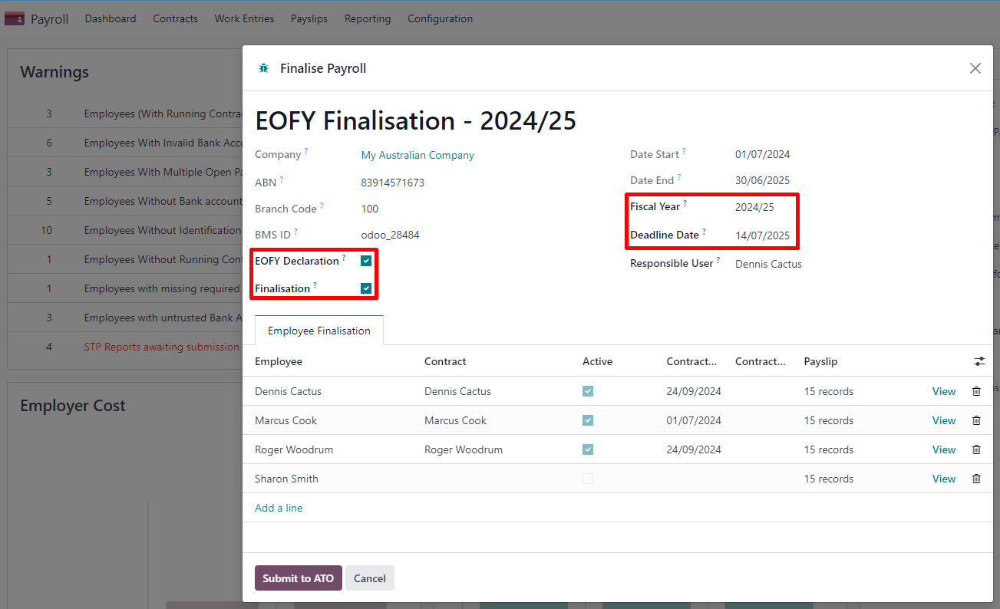Both active and terminated employees to finalise are displayed.
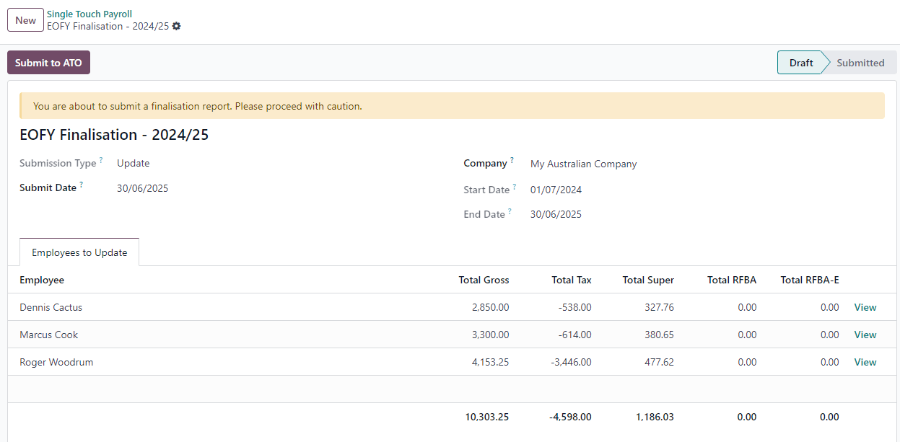From the finalisation form view, you can proceed with a final audit of all employees' payslips during the relevant financial year. Once ready, click Submit to ATO. When you have made the finalisation declaration, employees will see the status of their payment information change to Tax ready on their online income statement after the end of the financial year.
Individual finalisation¶
Odoo also allows you to finalise employees individually during the year. This can be useful when:
one-off payments are made after a first finalisation; and
finalisation after termination of employment during the year.
To proceed with an individual finalisation, go to , leave the EOFY Declaration checkbox unticked, and manually add employees to be finalised.
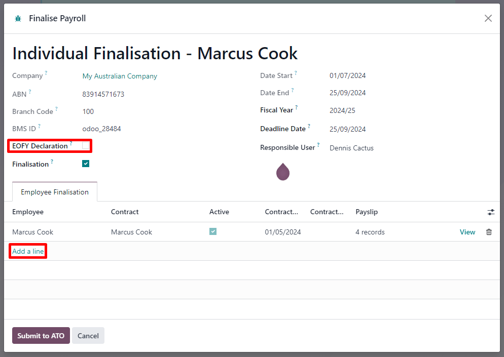Even if you finalise an employee record partway through the financial year, the ATO will not pre-fill the information into the employee's tax return until after the end of the financial year.
調整¶
重要
Odoo is currently in the process of becoming compliant with STP Phase 2, and the adjustment flows described below do not yet submit data to the ATO.
Amend finalisation¶
If you need to amend YTD amounts for an employee after a finalisation declaration was made, it is still possible to remove the finalisation indicator for that employee. To do so, go to , select the employee, and leave the Finalisation checkbox unticked.
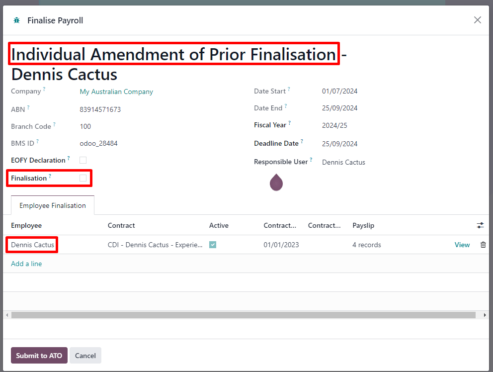When ready, click Submit to ATO to file the finalisation update to the ATO.
Once the correct YTD details are ready for that employee after amendment, finalise that employee again.
注釈
The ATO expects employers to correct errors within 14 days of detection or, if your pay cycle is longer than 14 days (e.g., monthly), by the date you would be due to lodge the next regular pay event. Finalisation amendments can be done through STP up to five years after the end of the financial year.
Finalising and amending finalisation for a single employee can also be useful when rehiring an employee within the same financial year.
Full file replacements¶
An employer can make full file replacements of pay runs to replace the last lodgement sent to the ATO if it turns out to contain significantly inaccurate data.
To do so, open the last STP submission and click Replace File. Then, select which payslips need to be reset by ticking the Reset Payslip checkbox.
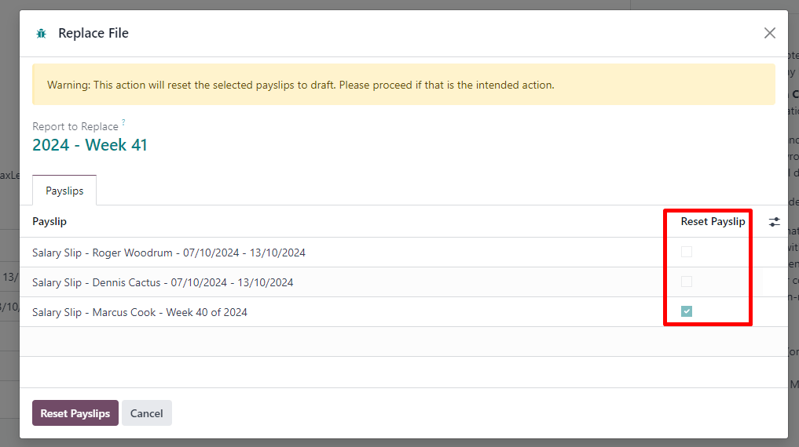Resetting payslips does not create new payslips or a new pay run, but instead:
The payslips batch is reset from Paid or Done to Confirmed.
The status of the reset payslips revert back to Draft.
The correct payslips remain paid and matched against the original payment.
A new STP submission is created to replace the former one. For traceability purposes, the former STP submission is not deleted but marked as replaced.
First, correct the reset payslips and create their draft entry. Once done, the Submit to ATO reappears on the payslip batch to process the full file replacement.
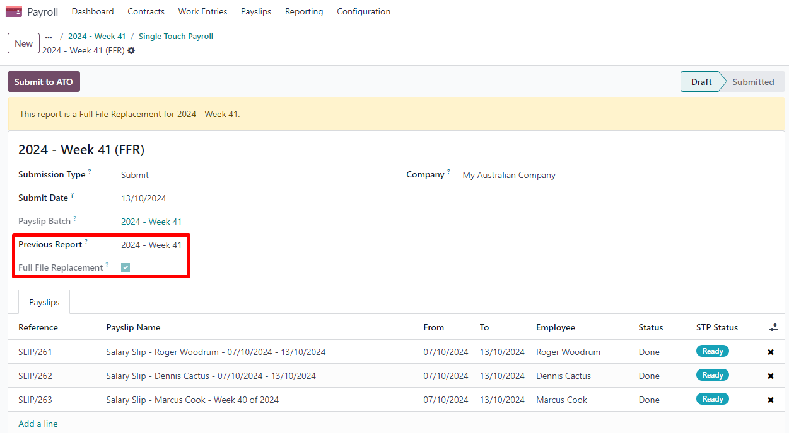When ready, submit the pay run to the ATO once again. Please note that full file replacements are only meant as a last resort to amend a substantial amount of erroneous data. When possible, the ATO recommends correcting an incorrect payslips by submitting a correction as part of the next pay run or via update event.
Moreover, it is not possible to submit a second full file replacement of the same submission, and a full file replacement can only be done once every 24 hours.
Zero out YTD values¶
In case of a mid-year change of several key identifiers, YTD values need to be zeroed out, and then re-posted with the updated key identifier.
For the following company identifiers, all employees need to be zeroed out:
ABN
Branch Code
BMS ID
For the following employee identifiers, only individual employees can be zeroed out:
TFN
Payroll ID
Before updating any key identifiers, create a new STP submission by going to and:
Change the Submission Type to Update.
Tick the Zero Out YTD checkbox.
Click Add a line to specify which employees.
Click Submit to ATO.
Once that is done, modify the key identifier(s) to amend.
Finally, go back to to create and submit a new Update, this time without ticking the Zero Out YTD checkbox. This will notify the ATO that the previously recorded YTD balances are to be adjusted to the new key identifiers.
Payroll links to other apps¶
休暇¶
The Time Off app is natively integrated with the Payroll app in Odoo. Different types of leaves will populate payslips based on the concept of work entries.
Go to , and for each type, configure the following two fields under the Payroll section:
Work Entry Type: defines which work entry should be selected on the Worked Days table of the payslip.
Unused Leave Type: choose between Annual, Long Service, or Personal Leave. If Personal Leave is selected, the remaining leave balance for this time off type will not show up as an entitlement at the time of termination. Unused leaves of the type Annual will include leave loading if the employee is eligible for it.

費用¶
The Expenses app is also natively integrated with the Payroll app in Odoo. First of all, go to and enable Reimburse in Payslip.
When an employee on your payroll submits an approved expense to be reimbursed, you can reimburse them using two ways:
If the expense is to be reimbursed outside of a pay run, click Post Journal Entries. The payment must be made manually.
If the expense is to be reimbursed as part of the next pay run, click Report in Next Payslip instead.
After an expense has been added to the next payslip, you can find it in the Other Inputs table. This input type is then computed as an addition to the net salary.
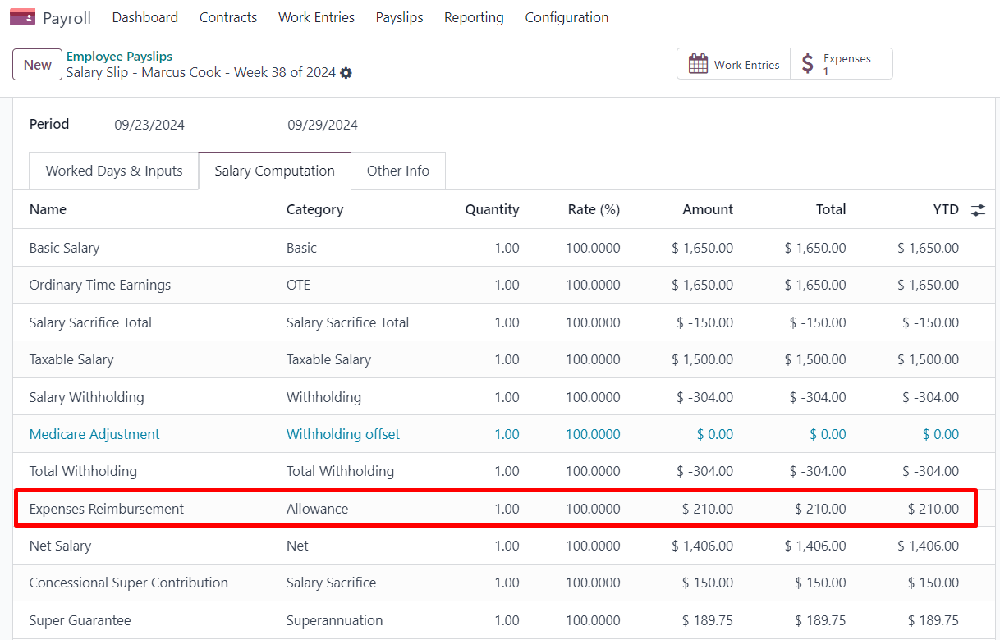After paying the employee, the payslip's journal item related to the employee's reimbursement is automatically matched against the expense's vendor bill.
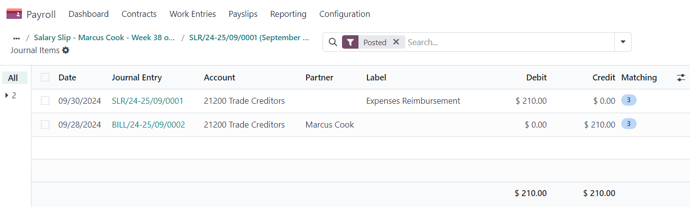Advanced configurations¶
Other input types¶
You can access other input types by going to . There are 63 other input types related to Australia. We do not recommend using the other ones as part of your payroll solution, since they cannot be used in the frame of STP. You can archive or delete them.
On each input type, the following fields are important:
Payment Type classifies input types in six categories:
Allowance: a separate amount you pay to your employees in addition to salary and wages. Some of these allowances are mandated by modern awards: laundry, transport, etc.
重要
Contact us if you plan to use allowances subject to varied rates of withholding (such as cents per KM or travel allowances) to see whether Odoo currently covers your business case.
注釈
As of Odoo 18, some allowances such as Laundry: Allowance for approved uniforms are managed by two other inputs: one to lodge the amount paid up to the ATO limit, and the other one to lodge the amount exceeding the ATO limit. This is necessary for Odoo to compute PAYGW correctly.
Some businesses may require to shift the reporting of an allowance from OTE to Salary & Wages depending on the employee. In this case, you must duplicate and re-configure an existing other input type. For example, Work-Related Non-Expense allowance is OTE by default.
Deduction: union fees and child support deductions are considered deductions.
ETP: employment termination payments. These are either considered excluded or non-excluded (see ATO's web page on ETP components taxation).
Leave: leave-related other inputs that are not pertaining to a single pay period (lump sum, cashing out leaves while in service, unused leaves, etc.).
Lump Sum: return to work and lump sum E (for back payments) fall under this category.
Other: other payments with their own specific logic.
PAYGW Treatment affects how Odoo withholds tax for this input type: Regular, No PAYG Withholding, and Excess Only (for allowances).
Superannuation Treatment: OTE, Salary & Wages, and Not Salary & Wages.
STP Code: only visible in developer mode, this field tells Odoo how to report the gross value of this payment to the ATO. We do not recommend changing the value of this field if it was already set by default.
Grouping other input types by Payment Type can help you understand the different scenarios in which these inputs can be used.
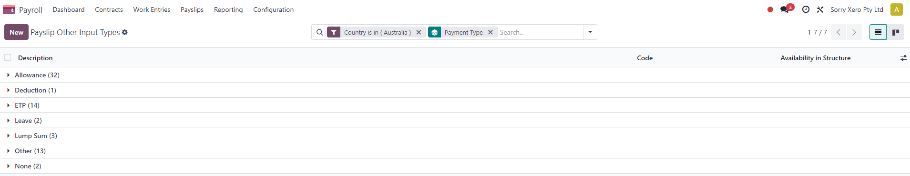Work entry types¶
A work entry type is a type of attendance for employees (e.g., attendance, paid leave, overtime, etc.). A few work entry types are created by default in every Australian database.

Before using Odoo's payroll solution for Australia, it is recommended you trim work entry types to keep the ones you need only by going to
For each type, make sure to configure the following fields for Australia:
Is OTE: determines whether time spent in this category can be considered ordinary time earnings, meaning that the superannuation guarantee rate will apply (e.g., regular attendance, paid leave, etc.).
Penalty Rate: used to determine the percentage of penalty that applies to time spent in this category. It is important that you configure the penalty rate that applies in your state or industry according to the type of work (e.g., Saturday rate, Sunday rate, overtime rate, etc.).
STP Code: only visible in developer mode, this field tells Odoo how to report the time spent in this category to the ATO. We do not recommend changing the value of this field if it was already set by default.

Current limitations¶
As of Odoo 18, we do not recommend companies to use the Payroll app for the following business flows:
Income stream types: Foreign Employment Income
Tax treatment category: actors & performers
Death benefits reporting
Reporting obligations for WPN (instead of ABN)
Allowances subject to a varied rate of withholding (such as cents per kilometer allowance and travel allowances)
Contact us if you would like to make sure whether Odoo fits your payroll requirements in Australia.
Employment Hero integration¶
If your business is already up and running with Employment Hero, you can use the connector as an alternative payroll solution. The Employment Hero module synchronizes payslip accounting entries (e.g., expenses, social charges, liabilities, taxes) automatically from Employment Hero to Odoo. Payroll administration is still done in Employment Hero; Odoo only records the journal entries.
設定¶
Install the Employment Hero Payroll module (
l10n_employment_hero).Configure the Employment Hero API by going to . More fields become visible after ticking the Enable Employment Hero Integration checkbox.
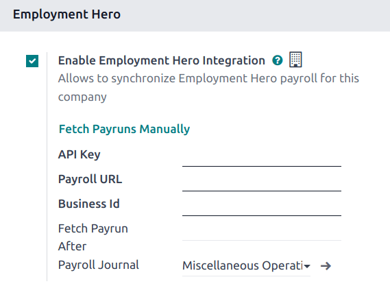Find the API Key in the My Account section of the Employment Hero platform.
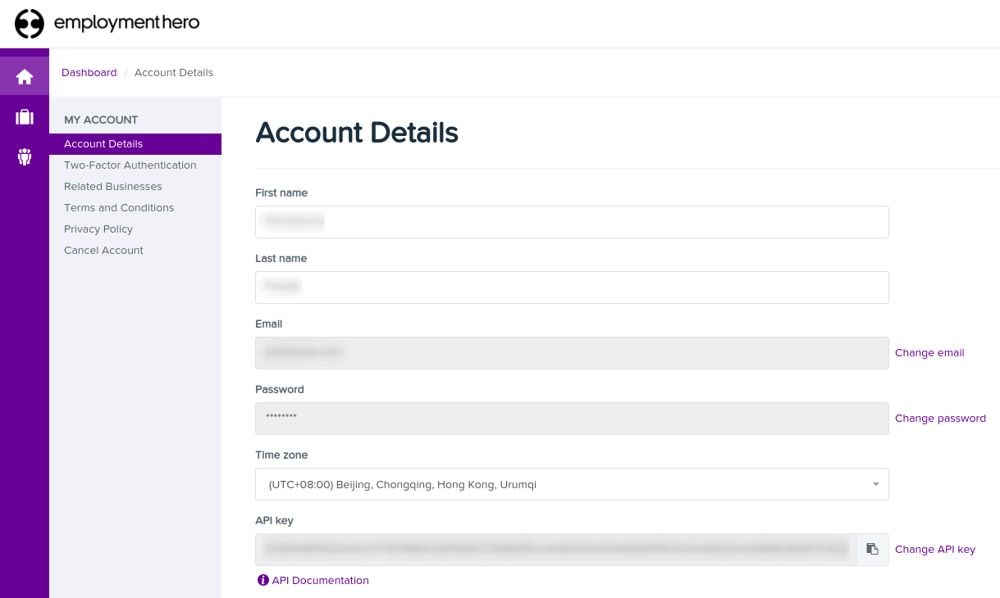The Payroll URL is pre-filled with
https://keypay.yourpayroll.com.au.警告
Do not change the pre-filled Payroll URL.
Find the Business Id in the Employment Hero URL (e.g.,
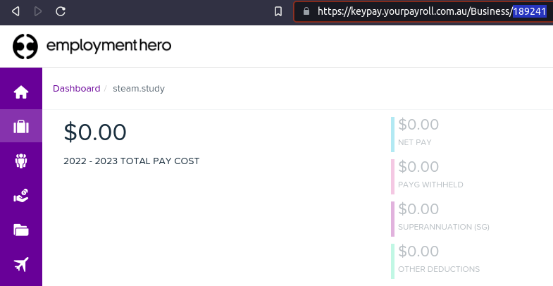189241).Select any Odoo journal as the Payroll Journal to post the payslip entries.
Configure the tax by going to . Create the necessary taxes for the Employment Hero payslip entries. Fill in the tax code from Employment Hero in the field.
The API explained¶
APIは、Employment HeroからOdooに仕訳帳入力を同期し、ドラフトモードでそれらを残します。参照には、ユーザが簡単にEmployment HeroとOdooで同じレコードを取得できるように、括弧内にEmployment Heroの給与明細仕訳IDが含まれています。
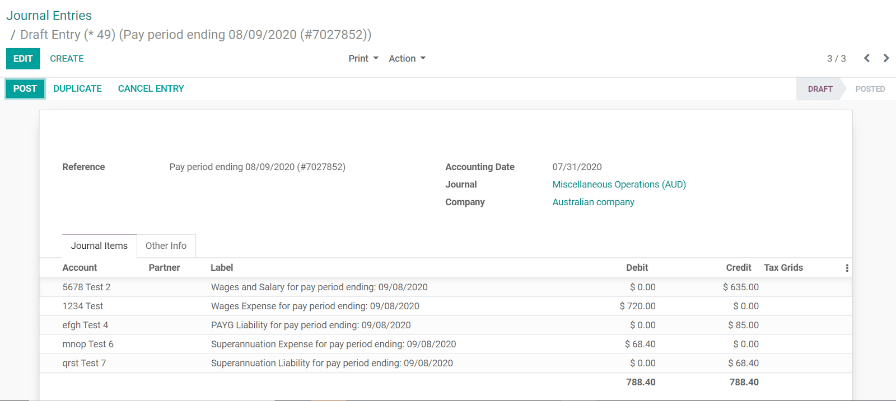By default, the synchronization happens once per week. It is possible to fetch the records manually by going to and, in the Employment Hero, clicking Fetch Payruns Manually.
Employment Hero payslip entries also work based on double-entry bookkeeping. The accounts used by Employment Hero are defined in the Payroll settings section.
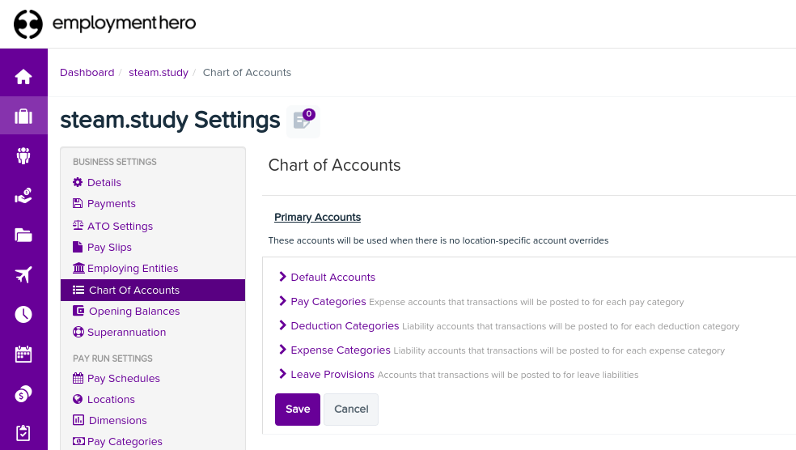For the API to work, you must create the same accounts as the default accounts of your Employment Hero business (same name and same code) in Odoo. You also need to choose the correct account types in Odoo to generate accurate financial reports.